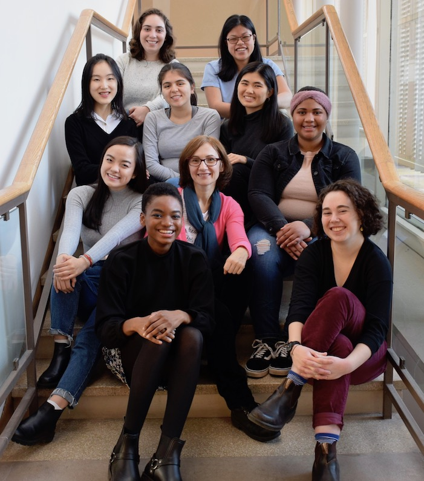

RESEARCH EXPERIENCE

Cred Lab: During the 2018-2019 academic year, I participated in the Sophomore Early Research Program and conducted research with the Wellesley College Cred Lab under the guidance of Professor Eni Mustafaraj.
My work during the academic year and the following summer focused on website credibility. Due to the rise of misinformation during the 2016 United States presidential election, I was particularly interested in studying the process by which internet users assess the credibility of information on the web and the role Google plays in the dissemination of information on the internet.
Visit the Wellesley College Cred Lab website for more information. In addition, an article on the Wellesley College website discusses one of our most recent projects.
Chemistry Lab: From 2017-2018, I worked as a member of a Physical Chemistry Lab at Wellesley College led by Professor Chris Arumainayagam. Our lab was particularly interested in the chemical reactions occurring within ice in low-pressure environments. By studying these reactions, we hoped to gain a better understanding of the formation of molecules and stars in the interstellar medium.
PUBLICATIONS
Arumainayagam, C., [et al., including Van Tuyl, M.], “Detection of Methoxymethanol as a Photochemistry Product of Condensed Methanol.” Monthly Notices of the Royal Astronomical Society: Letters, vol. 485, no. 1, 2019, pp. 19-23.
PRESENTATIONS
Van Tuyl, M. "Credibility in the Age of Misinformation: How Internet Users Assess Website Credibility." Poster presentation at Wellesley College Science Center Summer Research Program, Wellesley, MA, August 2019.
Van Tuyl, M., & Kawakami, A. “Googling the News Source: What Users Want to Know When Assessing Credibility.” Conference presentation presented at Wellesley College Ruhlman Conference, Wellesley, MA, May 2019.
Van Tuyl, M., Zhang, C., & Arumainayagam, C . “First Detection of Methoxymethanol as a Photolysis Product of Methanol.” Poster presentation at the Annual Northeast Student Chemistry Research Conference, Boston, MA, April 2018.